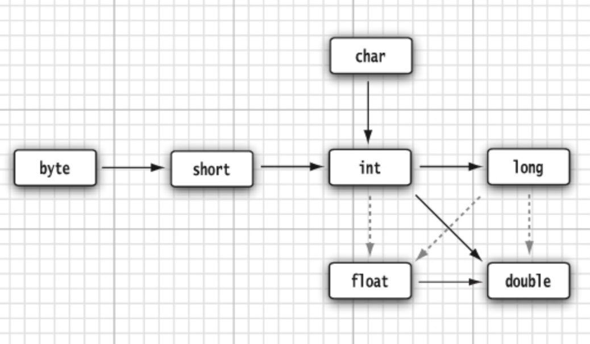

Chapter 3
3.1 A Simple Java Program
- Java is case sensitive
public class FirstSample{ //public: aaccess modifier //everything in a Java program must be inside a class //must make the file name for this source code the same as the name of the **public** class public static void main(String[] args){ // program starts with the code in this main method // and the main method must be declared **public** System.out.println("Hello, World!"); // using the `System.out` object and calling its `println` method // `System.out.print` will print without a newline } } void mainmeans that this method will not return an exit code. Use theSystem.exitmethod when needed.- Java uses double quotes to delimit strings like C/C++
3.2 Comments
- There are a kind of comments used to generate documentation automatically. Like this:
/** * The first program * @author StreamAzure */
3.3 Data Types
8 primitive types
| Type | Storage Requirement | Range |
|---|---|---|
| int | 4 bytes | $-2^{31}$ to $2^{31}-1$ |
| short | 2 bytes | |
| long | 8 bytes | |
| byte | 1 byte | $-128$ to $127$ |
| float | 4 bytes | |
| double | 8 bytes | |
| char | ||
| boolean |
You cannot convert between integers and boolean values. Also, an integer expression x = 0 will not be converted to a boolean value.
suffix and prefix
| suffix/prefix | meaning | example |
|---|---|---|
| L or l | long integer | 4000000000L |
| 0x | Hexadecimal | 0xCAFE |
| 0 | Octal | 010 (8) |
| 0b | binary | 0b1001 (9) |
| F or f | float | 3.14F |
| E or e | a decimal exponent | 1.729E3 (1729) |
Floating-point numbers without an F suffix will be considered to be of type double.
3.4 Variables and Constants
Variables
A variable must be declared and then be initialized.
You can do this:
int days = 12; //both declare and initializeBut with Java 10, it can be:
var days = 12; //initialize the local variable without declare its typeUnlike C/C++, Java does not distinguish between declarations and definitions.
Constants
The keyword final denotes a constant.
final double PI = 3.14;Set up a class constant, so that it can be available to multiple methods inside a single class.
public class Constants{
public static final double PI = 3.14;
public static void main(String[] args){
...
}
}Since it is declared with public, methods of other classes can also use it, like Constants.PI
Besides, const is a reserved keyword but not currently used.
Enumerated
Define you own enumerated type:
enum Size {SMALL, MEDIUM, LARGE, EXTRA_LARGE};Declare variables of this type:
Size s = Size.MEDIUM;3.5 Operators
Integer division by 0 raises an exception, whereas floating-point division by 0 causes an infinite or NaN result.
Some mathematical functions and constants:
double y = Math.sqrt(x);
double y = Math.pow(x, a);
Math.PI
Math.EWith importting the Math package, you can avoid the Math prefix:
import static java.lang.Math.*;Conversions between Numeric Types

Dotted arrows means the conversions may lose precision while solid arrows means not.
When two values are combined with a binary operator, the conversion priority will be: double → float → long →int
Casts
The conversions in which loss of information can be done by casts.
For example:
double x = 9.997;
int nx = (int) Math.round(x);
// nx = 10.Switch Expressions
When you need to choose among more than two values, use the switch expression (Java 14).
String seasonName = switch (seasonCode){
case 0 -> "Spring";
case 1 -> "Summer";
case 2 -> "Fall";
case 3 -> "Winter";
default -> "???";
};3.6 Strings
Substrings
String greeting = "hello";
String s = greeting.substring(0, 3);
// s = "hel"Every Java object can be converted to a string.
int age = 13;
String rating = "PG" + age;
// rating = "PG13"Use the join method when you put multiple strings together with separations among them:
String all = String.join("/","S","M","L","XL");
// the first parameter is the separation
// all = "S/M/L/XL"String Are Immutable
For example, turn hello into help:
String greeting = "hello";
greeting = greeting.substring(0, 3) + "p";
// greeting = "help"You can not change the individual characters in a Java string. It can be roughly considered as a char* pointer in C.